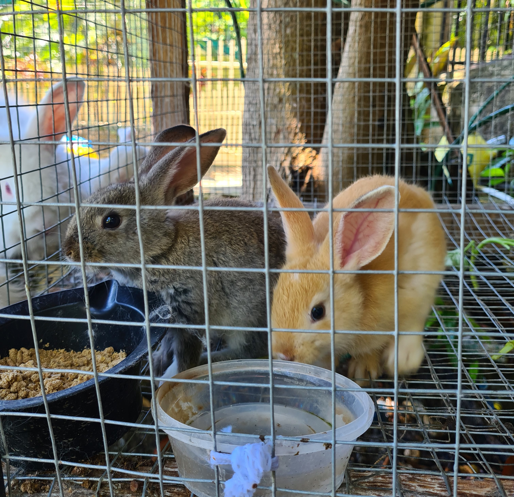
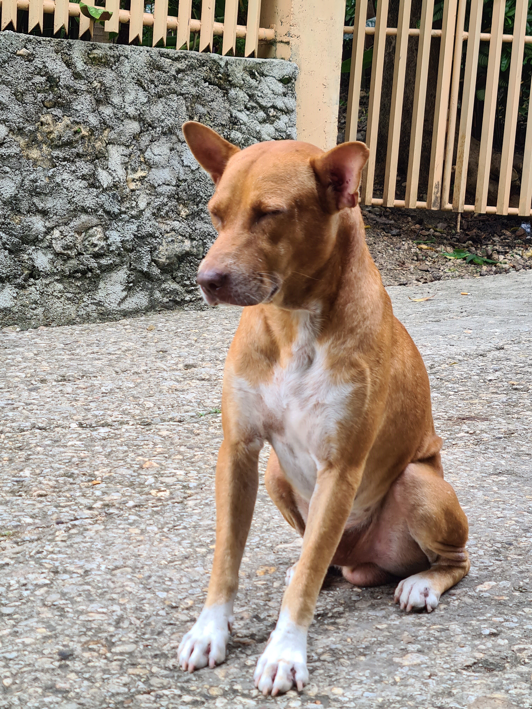

Let Me Talk:
I'm from Dalaguete, Cebu, known as The Vegetable Basket of Cebu. My personality is based on the time I wake up. You can call me Kyut or Mikay, but I prefer Kyut. Thanks. I,m a pet person, we do have lots of animals but my favorate is my cat Mooh.
My superpower is foresight; I dream about future events. Just call me if you want to know your future uwu.
More About Me:
My hobbies include dreaming, drawing, writing poetry, and playing online games such as Valorant and Mobile Legends.
Education:
- Elementary: Obong Elementary School
- Junior High: Dalaguete National High School
- Senior High: ICT Graduate from University of Cebu - Banilad Campus
- College (current): Cebu Institute of Technology - University (BSIT Students)
Skills:
- Coding (HTML,JavaScript, C)
- Communication
- Time management
- Flixible
Projects:
Contact Info:
My email: melessa.iming@gmail.com
My Pets:
-
Mooh

-
Usagi
 -
Body
